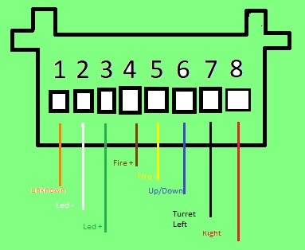

Heng Long
Heng long is a popular RC-Tank brand that we use exclusively
Here is the pinout for the turret
We will reuse these wires for our purposes
- Yellow can be a common ground
- Led - (White) will be a common gnd
- Led + (Green) will becommon a 3.3V power +. We will also power the esp32 cam with this line. Since 3.3V is required. We will add a 3.3V regulator
- TODO: Find the a wire to use as 7.4V +
- Note: on king tiger, Brown is used as Up/down line
- Blue +/Yellow- is correct for Firing. There is also a light on this circuit
- Brown + / Yellow- is correct for turret up/down
- Orange is available and could be used for 7.4V + , this frees up Green/ White as well

Current plan:
- Yellow is the common ground
- Left/Right Turret is Red/Black
- Up/Down Turret is Brown/Yellow is Up/Down (only brown is connected at base)
- EspCam is Orange/Yellow to voltage regulator
- Fire/hit can be green/white passed to another board which will also need the 3.3V
- ESPCam could be mounted in the cupola
- Blue is not connected for firing
or
Green could be 3.3V power and set in base with a regulator. Then you could tap the green wire for esp32 power
You could also set the white as another ground at the base
M26 Pershing
This works for using the red/black 3pin connector for esp-32 cam
- Red/Black Turret Left Right
- Yellow connected to Ground
- Brown connected to 3.3V(used for ESP-CAM)
Walker
Green/White (6/7) are connected to a front led
Yellow to ground
Brown to 3.3V this allows a 3 wire connector to esp-cam to be used with polarized connector
Polarized connector could be put on 6/7/8 for the infra-red
- power/ground could come from esp32-cam power/gnd
- Blue which is the 3-connector(yellow) is currently not used and could be fire
- Green White Orange are free one of which could be hit
- That still leaves white/orange to be used
Possible use of wires: